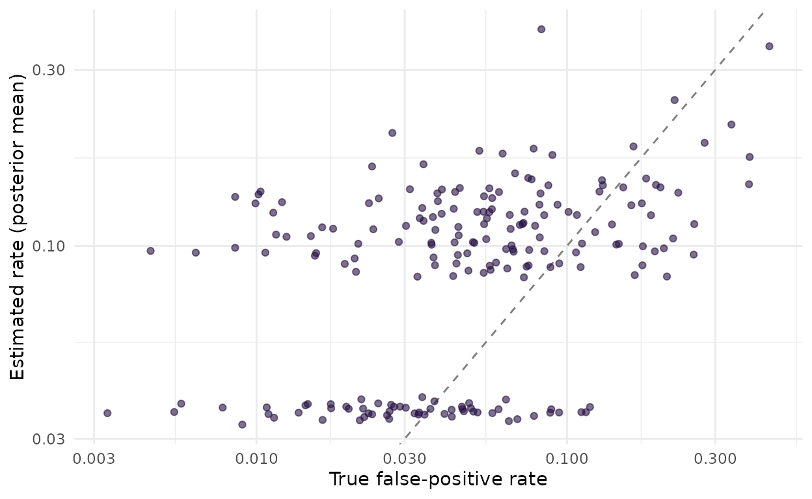

False-positive rates that vary among sites and occasions
Source:vignettes/fp_variation.Rmd
fp_variation.RmdThe basic model has one false-positive rate for all sites and
occasions, or a rate that depends on site covariates through
fp = ~ .... Two other patterns are common in acoustic data.
The rate can differ among sites for reasons nobody measured: a stream at
one site, a frog chorus at another. And it can change from one occasion
to the next with conditions that are measured on each recording, such as
wind or rain noise. This article fits both patterns to simulated data
whose truth is known, and compares the results with the constant-rate
model.
The fitting code is shown but not run when the article is built; the
results come from dev/precompute-fp-variation.R.
Unexplained variation among sites
The model
With random_fp = TRUE, the logit of the false-positive
rate of site i gets a site effect,
\mathrm{logit}(p_{10,i}) = \gamma_0 + \mathbf{x}_i^\top \boldsymbol{\gamma} + e_i, \qquad e_i \sim \mathrm{Normal}(0, \sigma_{\mathrm{fp}}),
where \gamma_0 is the intercept of
the rate, \mathbf{x}_i are the site
covariates of fp (none here), and \sigma_{\mathrm{fp}}, reported as
sd_fp_site, measures how much the rate varies among sites.
Its prior is half-Normal with scale fp_priors()$fp_site_sd
(1 by default). Each site effect is informed only by the automated
detections of its own site, so with few occasions per site the estimates
are pulled towards the mean.
The data
sim <- simulate_fp(nsite = 200, nocc = 10, sigma_p10 = 1, frac_verified = 0.3,
seed = 1)
m_const <- fp_occu(sim$data, occ = ~ x, fp = ~ 1, random_recorder = FALSE)
m_rand <- fp_occu(sim$data, occ = ~ x, fp = ~ 1, random_recorder = FALSE,
random_fp = TRUE)The rate of each site is drawn on the logit scale around a base rate of 0.05 with a standard deviation of 1, which gives a mean rate over sites of 0.071. The true occupancy slope is -0.8.
Results
tab(list(constant = res$among$constant, random_fp = res$among$random),
c("occ_x", "fp_(Intercept)", "p10_bar", "sd_fp_site"))
#> model variable mean lower upper rhat
#> 1 constant occ_x -0.461 -0.775 -0.160 1.000
#> 2 constant fp_(Intercept) -2.880 -3.245 -2.545 1.000
#> 3 constant p10_bar 0.054 0.037 0.073 1.000
#> 4 random_fp occ_x -0.530 -0.874 -0.224 1.000
#> 5 random_fp fp_(Intercept) -3.066 -3.686 -2.524 1.003
#> 6 random_fp p10_bar 0.098 0.053 0.151 1.010
#> 7 random_fp sd_fp_site 1.559 0.755 2.336 1.005The constant-rate model estimates the occupancy slope at -0.46
[-0.77, -0.16], which misses the true value of -0.8. With the site
effect the estimate is -0.53 [-0.87, -0.22], still below the truth but
with an interval that contains it, and the standard deviation of the
site effects, 1.56 [0.75, 2.34], covers the true value of 1. Unexplained
variation among sites is not harmless: in this dataset it pulled the
occupancy slope towards zero, as sites with a high false-positive rate
look occupied whatever their covariate. One dataset shows that it can
happen; fp_calibrate() with sigma_p10 in the
design measures how often.
fp_sites() gives the rate of each site, which with the
site effect is a compromise between the site’s own data and the
mean:
s <- res$among$random$sites
s$truth <- res$among$truth$p10_site
ggplot2::ggplot(s, ggplot2::aes(truth, p10)) +
ggplot2::geom_abline(linetype = "dashed", colour = "grey50") +
ggplot2::geom_point(alpha = 0.6, colour = "#241042") +
ggplot2::scale_x_log10() + ggplot2::scale_y_log10() +
ggplot2::labs(x = "True false-positive rate", y = "Estimated rate (posterior mean)") +
ggplot2::theme_minimal()
False-positive rate of each site estimated with the site effect against the true rate used in the simulation, on log scales. The dashed line marks equality.
The estimates fall into two groups. The 59 sites without any automated detection all get a low rate, between 0.033 and 0.039, whatever their true rate; the sites with detections get higher rates, which track the truth only loosely (correlation over all sites 0.45). Ten occasions per site say little about one site’s rate, and at a site that may be occupied a detection can be true or false. The site effect matters for the occupancy slope through the sites as a whole, not as a way to rank sites by their false-positive rate.
Costs and caveats
-
Mixing. The fit with the site effect took 27
seconds against 9 for the constant rate, and its smallest bulk effective
sample size was 371 (largest R-hat 1.01). In 20 simulated datasets of
the same kind with 300 sites and 20 occasions, 3 fits had an R-hat above
1.01 with the default settings
(
dev/profile/rejected-2026-10-21.md). Check the diagnostics, and run more iterations when they flag a problem. -
Model comparison. Leaving a site out means its own
effect is not known, so
loo()integrates each site’s effect out of its log-likelihood (by Gauss-Hermite quadrature) before the leave-one-out computation. Conditional on the fitted effects, as in thelog_likof the Stan program, many sites would have Pareto k above 0.7; integrated, 0 do here. The difference in favour of the site effect is about 1.7 times its standard error, not a decisive one.
loo::loo_compare(list(constant = res$among$constant$loo,
random_fp = res$among$random$loo))
#> model elpd_diff se_diff p_worse diag_diff diag_elpd
#> random_fp 0.0 0.0 NA
#> constant -4.8 2.8 0.96-
Confounding. The site effect is independent of the
covariates by construction. It does not fix a false-positive rate that
tracks the occupancy gradient: for that, model the rate on the
covariates (
vignette("crywolf")).
Variation among occasions
The model
A false-positive formula can use covariates of the automated table. The rate then varies among the occasions of a site:
\mathrm{logit}(p_{10,ik}) = \gamma_0 + \gamma_{\mathrm{noise}}\, \mathrm{noise}_{ik},
where \mathrm{noise}_{ik} is a
measurement on occasion k of site i, standardized. The prior on \gamma_{\mathrm{noise}} is the slope prior of
fp_priors(). Site and occasion covariates can be mixed in
one formula.
The data
The data were simulated with a background-noise covariate, drawn at random for every occasion, that raises the logit of the false-positive rate by 1 per standard deviation, from a base rate of 0.05. In practice the covariate is a column of the automated table:
Results
tab(list(constant = res$within$constant, noise = res$within$noise),
c("occ_x", "fp_(Intercept)", "fp_noise", "p10_bar"))
#> model variable mean lower upper rhat
#> 1 constant occ_x -0.788 -1.163 -0.441 1.001
#> 2 constant fp_(Intercept) -2.265 -2.537 -2.018 1.001
#> 3 constant p10_bar 0.095 0.073 0.117 1.001
#> 4 noise occ_x -0.751 -1.088 -0.438 1.001
#> 5 noise fp_(Intercept) -2.687 -3.041 -2.362 1.003
#> 6 noise fp_noise 0.898 0.635 1.186 1.001
#> 7 noise p10_bar 0.089 0.071 0.109 1.000The noise effect is estimated at 0.90 [0.64, 1.19] (true value 1), and the mean rate over occasions at 0.089 [0.071, 0.109] (true value 0.076). Because the noise was drawn independently of the occupancy covariate, the constant-rate model still estimates the occupancy slope well, at -0.79 [-1.16, -0.44]. What it cannot do is say which detections are suspect: under the noise model, a detection in a noisy recording counts as weaker evidence of presence. LOO prefers the noise model clearly:
loo::loo_compare(list(constant = res$within$constant$loo,
noise = res$within$noise$loo))
#> model elpd_diff se_diff p_worse diag_diff diag_elpd
#> noise 0.0 0.0 NA
#> constant -25.1 7.5 1.00If noise were correlated with the occupancy covariate, as when noisy
sites are also those with less habitat, leaving it out would bias the
slope as in vignette("calibration").
Which to use
- A measured cause of false positives, at the site or the occasion
level, belongs in the
fpformula. It adds one coefficient per covariate rather than one effect per site, and modelling the measured cause is what restored calibrated intervals in the simulations ofvignette("calibration")when the cause was correlated with occupancy. -
random_fp = TRUEis for variation among sites that no covariate explains. It costs time and mixing. It is off by default. When true detection may also vary among sites, fit it together withrandom_det = TRUE: alone, it can mistake variation in detection for variation in false positives (vignette("site_effects")). - With neither, the false-positive rate is assumed equal everywhere. A
posterior predictive check (
fp_ppc()) that flags sites with more detections than the model expects is a sign that this is wrong.